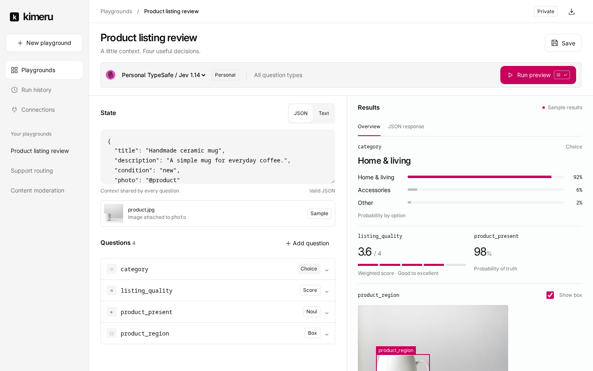
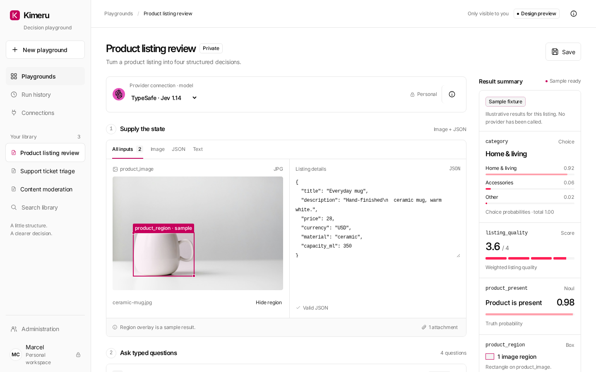
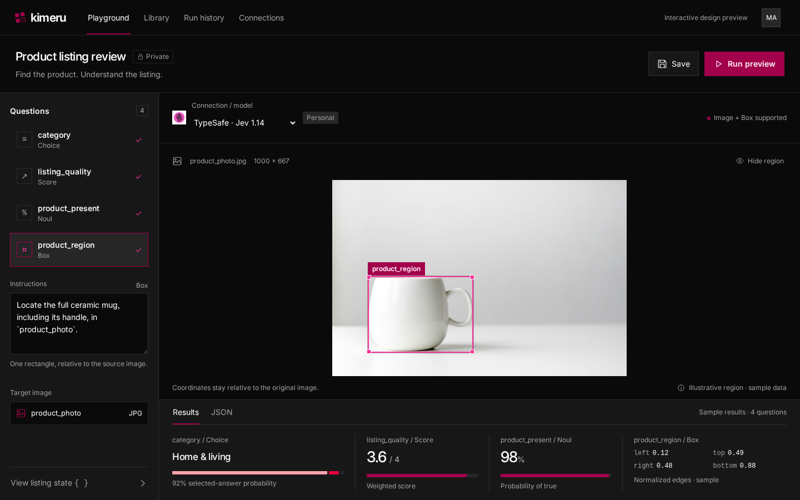
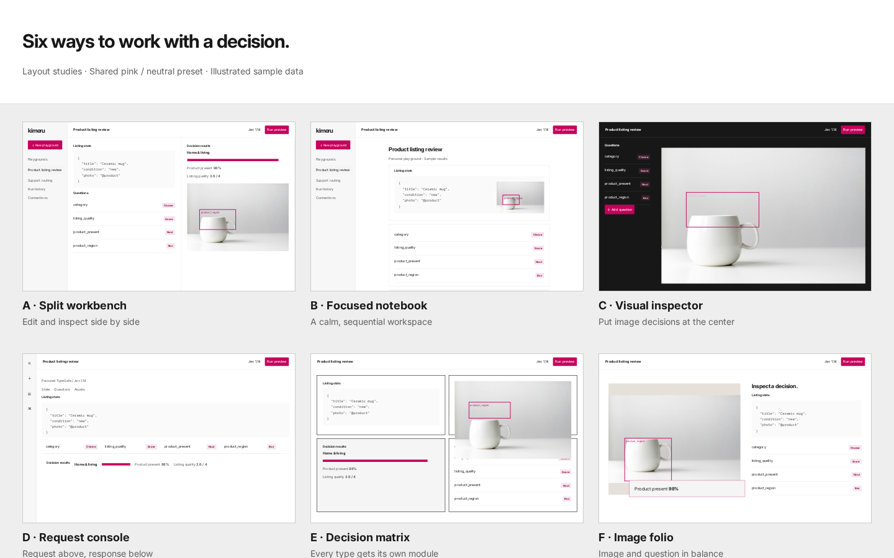

Direction A Recommended
Split workbench
State and questions beside their results. A practical workspace for repeated editing and testing.
Explore workbenchThree ways to supply context, ask typed questions, and inspect a decision. Same product, same pink / neutral preset, different ways to work.

State and questions beside their results. A practical workspace for repeated editing and testing.
Explore workbench
A guided, vertical flow with a quiet result summary. Closest to the familiarity of Open WebUI.
Explore notebook
A larger image canvas with nearby question controls and a results dock. Strongest for visual decisions.
Explore inspectorTry changing providers, opening questions, viewing JSON, or toggling image regions. Runs replay clearly labeled sample fixtures; these drafts do not call live providers or collect API keys.
The request console, decision matrix, and image folio remain available as alternate directions.
Open the six-layout study